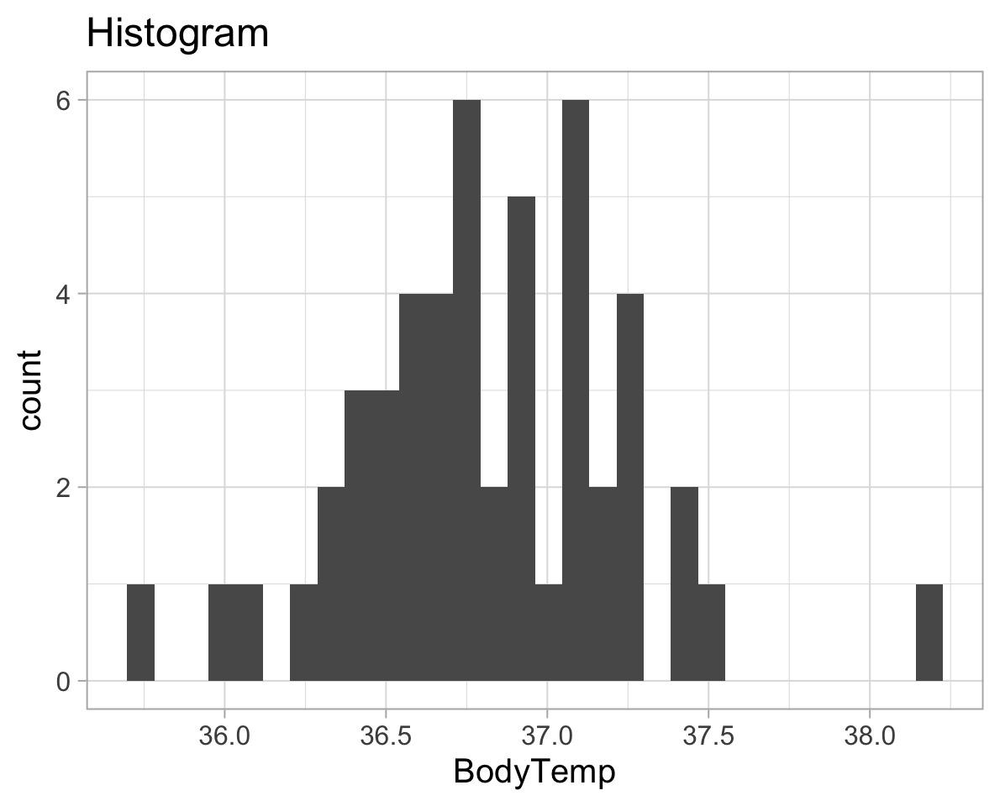
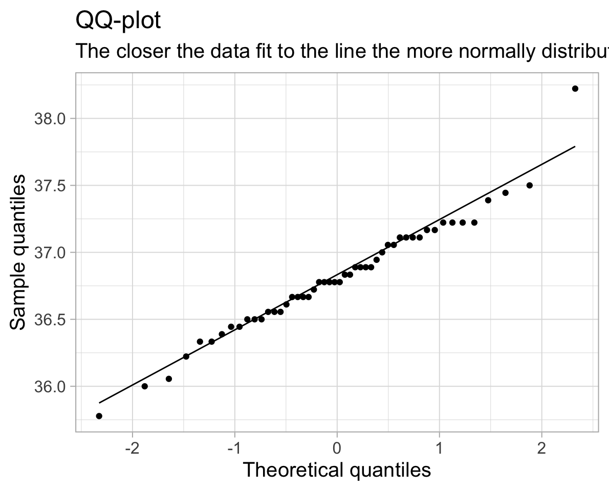

One sample t-test
A one-sample t-test is a statistical procedure to test whether or not the mean of a population (\(\mu\)) is equal to some hypothesised value (\(\mu_0\)). Examples when you would use a one-sample t-test include:
- Is the average weight of a dog greater than 20kg?
- Is the mean body temperature not equal to 37 °C?
- On the Beck Depression Inventory (BDI), a score of >25 is considered clinical diagnosis of depression. Is the average score of our population of interest (for instance, people with a specific disease) significantly above this cutoff?
1 One-sample t-test procedure
1.1 Null hypothesis
A one-sample t-test always has the null hypothesis:
\[ H_0: \mu = \mu_0 \]
I.e. the population mean is equal to some hypothesised value, \(\mu_0\).
1.2 Alternative hypothesis
The alternative hypotheses can be two-sided, or one-sided (left-tailed or right-tailed).
-
Two-sided/Two-tailed: \(H_1 : \mu \neq \mu_0\)
(population mean is not equal to some hypothesised value \(\mu_0\))
-
Left-sided/Left-tailed: \(H_1 : \mu < \mu_0\)
(population mean is less than some hypothesised value \(\mu_0\))
-
Right-sided/Right-tailed: \(H_1 : \mu > \mu_0\)
(population mean is greater than some hypothesised value \(\mu_0\))
2 t-statistic
The test statistic is the t-statistic:
\[t = \frac{\bar{x} - \mu_0}{s/\sqrt{n}} \]
where
- \(\bar{x}\) = sample mean
- \(\mu_0\) = hypothesised value
- \(s\) = standard deviation of the sample
- \(n\) = sample size
As we have produced a sample, we are using the sample statistics to estimate the population parameters. When the population standard deviation (\(\sigma\)) is unknown, we estimate it using the sample standard deviation (\(s\)).
2.1 The t-distribution
The t-distribution is a family of distributions that look almost identical to the standard normal distribution. The t-distribution is very important when working with small sample sizes, e.g. \(n < 30\). As the sample size increases, the more the t-distribution will look like the standard normal distribution.
The particular shape of the t-distribution is determined by the degrees of freedom, or df in short. You can see the \(t\)-distribution for different degrees of freedom below.
Notice that as the degrees of freedom (\(\nu\) in the plot below) gets bigger (so as \(n\) gets bigger), the more the \(t\)-distribution fits a normal distribution.
Optional: If you want to know more about degrees of freedom
Degrees of freedom are the number of independent observations in a set of data. When we are estimating a mean from a single sample, the degrees of freedom is equal to the sample size minus one (\(n-1\)).
This means that the sampling distribution of \(t\)-statistics from samples of size 10, would follow a \(t\)-distribution with \(10-1\) degrees of freedom.
Why do we subtract 1 from the number of observations?1
Degrees of freedom can alternatively be seen as the number of values that are free to vary in a data set. For example, if we have 3 sets of numbers which have a mean of 10:
- \(a\): {9,10,11}
- \(b\): {8,10,12}
- \(c\): {5,10,15}
Once you have chosen the first two numbers in the set, the third number is fixed. I.e. you cannot choose the third item in the set. If you choose set \(a\), once you’ve chosen numbers 9 and 10, the next number must be 11 in order to get a mean of 10. The only numbers that are free to vary are the first two, thus the degrees of freedom for a set of three numbers, is two.
3 Critical values and significance
In order to test the significance of a given \(t\)-statistic, we need to assess the probability of obtaining our \(t\)-statistic (or one at least as extreme) against a \(t\)-distribution with degrees of freedom \(n-1\).
We can do this in R using the pt() function with pt(x, df).
Remember that we have used the function pnorm(x, mean, sd) to compute the area to the left of x in a normal curve centred at mean and having standard deviation sd.
Similarly, pt(x, df) computes the area to the left of x in a \(t\)-distribution curve with degrees of freedom df.
Question. Looking at the plot above, for a \(t\)-distribution with degrees of freedom of 5 (the blue line), what proportion of the curve is to the left of -2?
pt(-2, df = 5)[1] 0.05096974From this, we can say that assuming the null hypothesis to be true, the probability of obtaining a \(t\)-statistic with 5 degrees of freedom of \(\leq -2\) is 0.051.
We can also find the critical values of a \(t\)-distribution using the function qt(p, df). This will return the values of \(t\) for which \(p\) of the distribution lies to the left.
This way, we can find the values of \(t\) at which we will reject the null hypothesis (for a given \(\alpha\) level).
Question. At what value of \(t\) does 5% of the \(t\)-distribution with 5 degrees of freedom lie to the left?
qt(.05, df = 5)[1] -2.015048If we perform a one-tailed test of \(\mu_1 < \mu_{0}\) on a sample of 6 (so our degrees of freedom is 5), we will reject the null hypothesis (\(\mu_1 = \mu_{0}\)) if our corresponding \(t\)-statistic is \(\leq -2.015\).
Question. At what values of \(t\) do 5% of the \(t\)-distribution with 5 degrees of freedom lie in either tail?
Remember that the t-distribution is symmetric and centred on 0!
If we perform a two-tailed test of \(\mu_1 \neq \mu_{0}\) on a sample of 6, we will reject the null hypothesis (\(\mu_1 = \mu_{0}\)) if the absolute magnitude of our corresponding \(t\)-statistic is \(\geq 2.571\).
4 Recap and moving forward: Body Temperature data
We will now recap the Body Temperature example, putting everything together. Recall the goal is to answer this question:
Has the average body temperature for healthy humans changed from the long-thought 37 °C?
Again, we will be using the data2 comprising measurements on body temperature and pulse rate for a sample of \(n = 50\) healthy subjects. The data are stored at the following address: https://uoepsy.github.io/data/BodyTemp.csv
For a one-sample t-test we are evaluating if the average body temperature is significantly different from the population mean of 37°C. It would be extremely time-consuming, costly (and near impossible) to take everyone’s body temperature. Instead, we might take a simple random sample of healthy humans and use the mean body temperature of this sample to estimate the true population mean.
Simple random sampling (SRS)
Simple random sampling is a type of sampling technique. Sampling techniques are used by companies, researchers and individuals for a variety of reasons. Sampling strategies are useful when conducting surveys and answering questions about populations. There are many different methods researchers can use to obtain individuals to be in a sample. These are known as sampling methods.
Simple random sampling is, unsurprisingly, the simplest form of probability sampling: every member in the population has an equal chance of being selected in the sample. Individuals are usually selected by a random number generator or some other mean of random sampling.
The biggest benefit of SRS is it removes bias, as everyone has an equal chance of being selected. Furthermore, the sample is representative of the population.
First, we need to write the null and alternative hypotheses.
\[H_0 : \mu = 37 °C\] \[H_1 : \mu \neq 37 °C\]
Next, we read the data into R and calculate the average body temperature (sample statistic) of the sample group.
library(tidyverse)
temp_data <- read_csv('https://uoepsy.github.io/data/BodyTemp.csv')
dim(temp_data)[1] 50 2head(temp_data)# A tibble: 6 × 2
BodyTemp Pulse
<dbl> <dbl>
1 36.4 69
2 37.4 77
3 37.2 75
4 37.1 84
5 36.7 71
6 37.2 76We have measurements of the body temperature (in Celsius) and pulse rate for a sample of 50 healthy individuals.
The average body temperature in the sample is:
xbar <- mean(temp_data$BodyTemp)
xbar[1] 36.81111Do we know the population standard deviation (\(\sigma\))? That is, do we know the standard deviation of body temperate of all healthy individuals?
No, so we estimate it with the sample standard deviation (\(s\)).
s <- sd(temp_data$BodyTemp)
s[1] 0.4251776We also know that:
Now, we have all the data to perform the t-test. Insert our values into the t-statistic formula, defined to be:
\[ t = \ \frac{\bar{x} - \mu_0}{s/\sqrt{n}} \]
And to calculate, we can use R as a calculator:
t_obs <- (xbar - mu0) / (s / sqrt(n))
t_obs[1] -3.141384
Warning!
Note that you should only round your numbers at the very end of calculations!
Going back to the start, we can use our skills with summarise() to calculate all the terms we need for our \(t\)-statistic:
terms <- temp_data %>%
summarise(
xbar = mean(BodyTemp),
s = sd(BodyTemp),
mu0 = 37,
n = n()
)
terms# A tibble: 1 × 4
xbar s mu0 n
<dbl> <dbl> <dbl> <int>
1 36.8 0.425 37 50And then we can plug in these numbers to our equation.
4.1 Critical t-value
Using the qt() function, calculate the critical value for \(\alpha\) = 0.05. This is the smallest absolute value of \(t\) at which you will reject the null hypothesis.
- You’ll need to work out the degrees of freedom
- You’ll also need to think about whether we are performing a two-tailed test or a one-tailed test. If a two-tailed test, then remember that the \(\alpha\) is split between the two tails (and so we would reject anything in the most extreme 2.5%)
The degrees of freedom are \(n-1 = 50-1 = 49\)
We’re performing a two-tailed test as we do not know if the mean body temperature will be below or above the stipulated 37°C. So we will reject a \(t\)-statistic which falls in the upper or lower 2.5% of the distribution.
We will reject a \(t\)-statistic which is less than -2.009575 or greater than 2.009575.
4.2 P-value
We have our observed \(t\)-statistic of -3.14. We know that this is more extreme than the critical value of -2.009575.
What is the probability of obtaining a \(t\)-statistic at least as extreme as -3.14, assuming the null hypothesis to be true? In other words, what is the p-value?
Because our alternative hypothesis is two-tailed, we will reject the null hypothesis for extreme \(t\)-statistics in either direction. So we are calculating the probability of observing a value at least as extreme in either direction, and must multiply the one tail by 2.
And so, the probability of observing a value as extreme as -3.14 is 0.003 (i.e. very low!). Therefore, we have enough evidence to reject the null hypothesis and conclude that the mean body temperature of healthy adults is significantly lower than the long-held value of 37°C.
4.3 Calculating a one-sample t-test with one function
Now that we’ve gone through all that, you’ll be happy to know that we can do all of what we just did above (and more!) using just one simple function in R, called t.test().
The t.test() function takes several arguments, but for the current purposes, we are interested in t.test(x, mu, alternative, conf.level).
-
xis the data
-
muis the hypothesized value of the mean in \(H_0\)
-
alternativeis either"two.sided"(default),"less", or"greater", and specifies the direction of the alternative hypothesis. -
conf.levelconfidence level of the interval. By default, this is 0.95 but you can change it to be for example 0.90 or 0.99.
result <- t.test(temp_data$BodyTemp, mu = 37, alternative = "two.sided")
result
One Sample t-test
data: temp_data$BodyTemp
t = -3.1414, df = 49, p-value = 0.002851
alternative hypothesis: true mean is not equal to 37
95 percent confidence interval:
36.69028 36.93195
sample estimates:
mean of x
36.81111 As we can see, the output of the t.test gives us our t-value (-3.14), our degrees of freedom (df = 49), our p-value (0.002851). It also provides us with 95% CIs of the population mean and the mean of our sample body temp (36.81). It looks like everything matches up with our calculations above!
5 Assumptions
One last important thing to note is that when we perform a one sample mean tests, we assume a few basic things:
- The data are continuous;
- The data are independent;
- The data are normally distributed OR the sample size is large enough (rule-of-thumb \(n \geq 30 30\)) and the data are not strongly skewed;
If any of these assumptions are not met, the results of the test are unreliable.
To check the assumptions: 1) The dependent variable should be measured at the interval or ratio level 2) Data is independent (i.e., not correlated/related), which means that there is no relationship between the observations. This is more of a study design issue than something you can test for, but it is an important assumption of the one-sample t-test. 3) Can be checked visually with plots:
ggplot(temp_data, aes(x=BodyTemp))+
geom_histogram()+
labs(title="Histogram")
ggplot(temp_data, aes(x=BodyTemp))+
geom_density()+
labs(title="Density plot")
We can also use a plot called a QQplot (Quantile-Quantile plot), which orders the data and plots it against the equivalent quantile of the normal distribution:
ggplot(temp_data, aes(sample = BodyTemp))+
geom_qq()+
geom_qq_line()+
labs(title="QQ-plot",
subtitle="The closer the data fit to the line the more normally distributed they are.",
x = "Theoretical quantiles",
y = "Sample quantiles")
We can also conduct a formal hypothesis test for normality, such as the Shapiro-Wilk test.
The null hypothesis of the Shapiro-Wilk test is that the sample came from a population that is normally distributed.
The alternative hypothesis is that the sample came from a population that is not normally distributed.
The test returns a test statistic \(W\), and a p-value \(p\). The \(W\) test statistic is slightly complex to compute by hand, so we will use R to compute it for us. The test statistic \(W\) measures how much the sample data depart from normality (the null hypothesis).
The p-value corresponds to the probability of observing data of this shape of distribution, assuming the data are drawn from a normally distributed population (i.e., assuming the null hypothesis to be true).
In R:
shapiro.test(temp_data$BodyTemp)
Shapiro-Wilk normality test
data: temp_data$BodyTemp
W = 0.97322, p-value = 0.3115The p-value here is 0.31, which is greater than \(\alpha = 0.05\). We therefore fail to reject the null hypothesis of the Shapiro-Wilk test that the sample came from a population that is normally distributed.
So our assumption for the one sample mean test holds!
6 Worked example
6.1 Pets’ weights
Data for a sample of 2000 licensed pets from the city of Seattle, USA, can be found at the following url: https://uoepsy.github.io/data/seattlepets.csv.
It contains information on the license numbers, issue date and zip-code, as well as data on the species, breeds and weights (in kg) of each pet.
We are interested in whether the average weight of a Seattle dog is greater than 20kg.
Definition of null and alternative hypotheses
Let \(\mu\) denote the mean weight (in kg) of all dogs in Seattle. We wish to test:
\[H_0: \mu = 20\] \[H_1: \mu > 20\]
Question
- Read the data into R.
- Use
summary()to have a look at your data. - Which variables are you going to need for our analysis?
- Does anything jump out as relevant?
license_issue_date license_number animals_name species
Length:2000 Length:2000 Length:2000 Length:2000
Class :character Class :character Class :character Class :character
Mode :character Mode :character Mode :character Mode :character
primary_breed secondary_breed zip_code weight_kg
Length:2000 Length:2000 Length:2000 Min. : 0.3941
Class :character Class :character Class :character 1st Qu.: 4.6970
Mode :character Mode :character Mode :character Median : 16.3954
Mean : 15.2411
3rd Qu.: 22.4816
Max. :103.4838
NA's :15 We’re going to need the weight_kg variable. Notice that there are some missing values (you can see that there are 15 NA’s). We will need to decide what to do with them.
Also, there are some cats in our data as well as the dogs which we are interested in. There are even a couple of goats! We will want to get rid of them..
Question. Create a new dataset and call it dogs, which only has the dogs in it.
Question. Remove the rows having a missing weight.
There are two completely equivalent options. Pick only one of these two options to remove the missing entries, as both will achieve the same goal.
Option 1:
Option 2:
Look at the help documentation for is.na (search in the bottom right window of RStudio, or type ?is.na)
It takes the dogs dataset, and it filters so that it will keep any rows where !is.na(weight_kg) is TRUE.
The is.na(weight_kg) will be TRUE wherever weight_kg is an NA and FALSE otherwise.
The ! before it flips the TRUEs and FALSEs, so that we have TRUE wherever weight_kg is a value other than NA, and FALSE if it is NA.
You can read it as “keep all rows where there isn’t an NA in the weight_kg variable”.
Question. Using summarise(), calculate \(\bar{x}\), \(s\) and \(n\).
What is \(\mu_{0}\), and what are our degrees of freedom (\(df\))?
# A tibble: 1 × 3
xbar s n
<dbl> <dbl> <int>
1 20.4 6.23 1333\(\mu_{0}\) is 20kg, and our degrees of freedom is \(n-1\), which is \(1333-1 = 1332\).
Question. Calculate the standardised statistic \(t\), using $ to access the numbers you just calculated above.
t_obs <- (dogstats$xbar - 20) / (dogstats$s / sqrt(dogstats$n))
t_obs[1] 2.202048Question. Calculate the p-value using pt().
- Our degrees of freedom are \(n-1\)
- Remember that the total area under a probability curve is equal to 1.
pt()gives us the area to the left, but we want the area in the smaller tail (if \(\bar{x}\) is greater than \(\mu_{0}\), we want the area to the right of \(t_{obs}\). - Is our hypothesis one- or two-sided? If it is two-sided, what do we need to do to get our p-value?
Our sample statistic (\(\bar{x}\) = 20.38kg) is greater than the hypothesised mean (\(\mu_{0}\) = 20kg), so we want the area to the right.
Reminder: For a probability distribution, the area under the curve to the right of x is 1 minus the area to the left. This is equivalent to saying that the probability of observing a value greater than x is 1 minus the probability of observing a value less than x.
p_righttail = 1 - pt(t_obs, df = 1332)
p_righttail[1] 0.01391638Question. Finally, use the t.test() function.
Check that the results match the ones you just calculated.
t.test(x = dogs$weight_kg, mu = 20, alternative = "greater")
One Sample t-test
data: dogs$weight_kg
t = 2.202, df = 1332, p-value = 0.01392
alternative hypothesis: true mean is greater than 20
95 percent confidence interval:
20.09496 Inf
sample estimates:
mean of x
20.37604 Question. Compute the effect size
- by hand;
- and by using the
cohens_d()function from theeffectsizepackage that was shown in the lectures.
D <- (dogstats$xbar - 20) / dogstats$s
D[1] 0.06031312library(effectsize)
cohens_d(dogs$weight_kg, mu = 20)Cohen's d | 95% CI
------------------------
0.06 | [0.01, 0.11]
- Deviation from a difference of 20.As you can see, we have a Cohen’D of 0.06, which indicates a small/negligible effect size.
6.2 Cat weights!
Question. Without looking at the data (and without googling either), do you think that the average weight of a pet cat is more than/less than/equal to 4.5kg?
Write out your null and alternative hypotheses, and conduct the appropriate test. If the result is significant, don’t forget to compute the effect size.
My own hypotheses are the following. Perhaps yours are different if your belief is that they weigh less than 4.5kg.
\[H_0 : \mu = 4.5\] \[H_1 : \mu > 4.5\]
The data:
Shapiro-Wilk normality test:
shapiro.test(cats$weight_kg)
Shapiro-Wilk normality test
data: cats$weight_kg
W = 0.99825, p-value = 0.7611QQ-plot:
qqnorm(cats$weight_kg)
Perform the t-test:
t.test(cats$weight_kg, mu=4.5, alternative="greater")
One Sample t-test
data: cats$weight_kg
t = -1.2444, df = 649, p-value = 0.8931
alternative hypothesis: true mean is greater than 4.5
95 percent confidence interval:
4.463972 Inf
sample estimates:
mean of x
4.484496 7 Glossary
- Population. The entire collection of units of interest.
- Sample. A subset of the entire population.
- Degrees of freedom. number of independent observations in a set of data, (\(n-1\))
- Simple random sample (SRS). Every member of a population has an equal chance of being selected to be in the sample.
- Assumptions Requirements of the data in order to ensure that our test is appropriate. Violation of assumptions changes the conclusion of the research and interpretation of the results.
-
Shapiro-Wilks Tests whether sample is drawn from a population which is normally distributed.
- QQplot/Quantile-Quantile plot Displays the theoretical quantiles of a normal distribution against the sample quantiles. If the data points fall on the diagonal line, the sample is normally distributed.